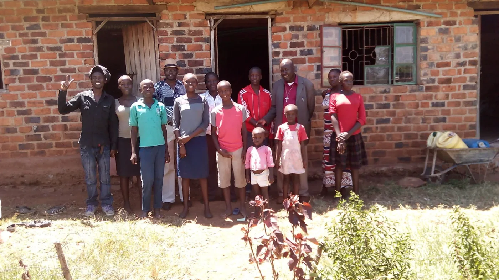
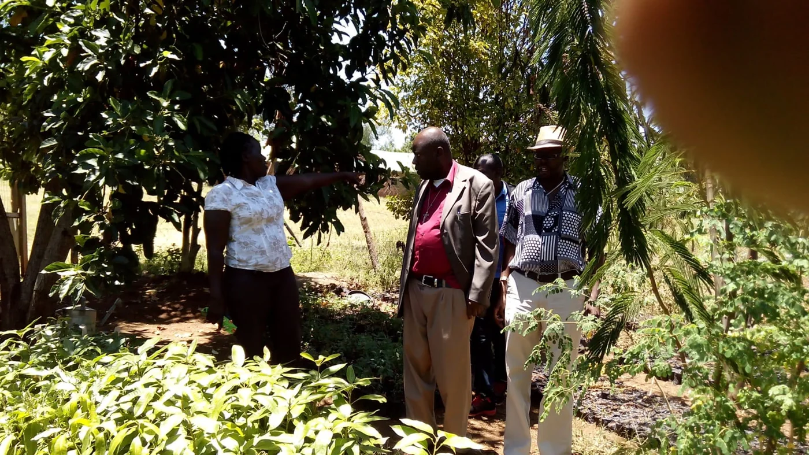
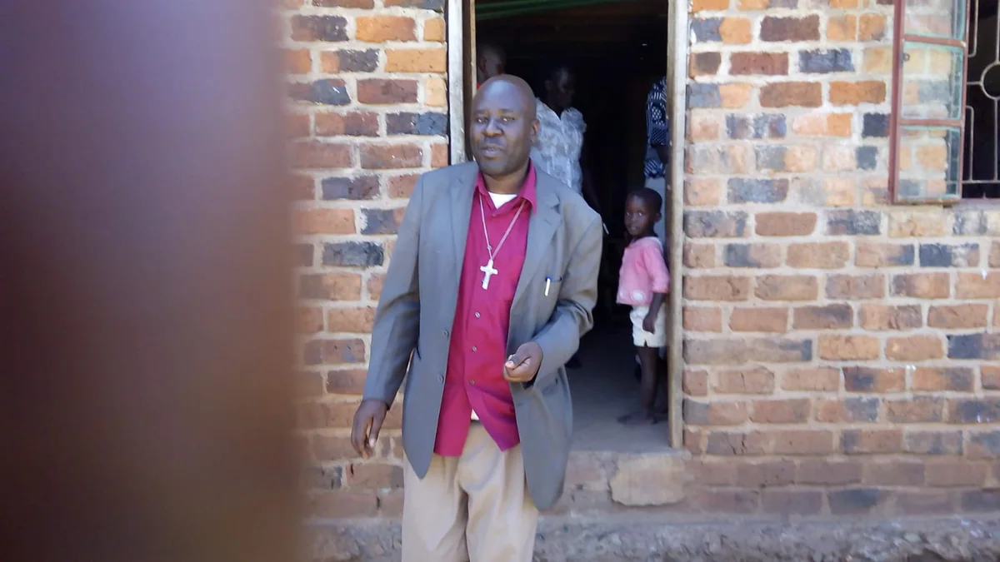
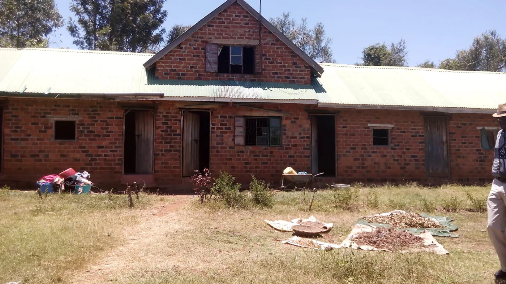
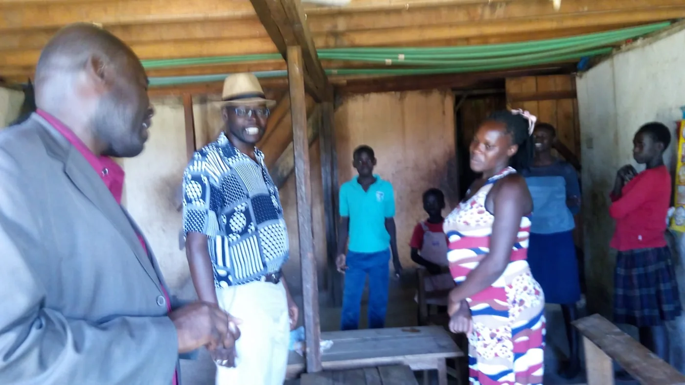
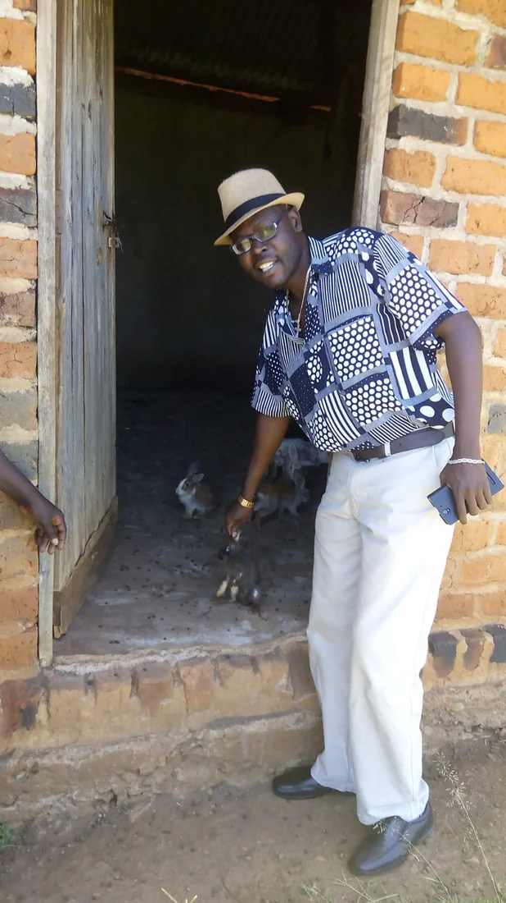

Education
Keeping opportunity within reach.
Through personal fundraising and community support, Bishop Willis Ouma Ondiek has helped sponsor children from less fortunate backgrounds so they can remain in school and pursue a better future.

Established 2015 • Community development initiative
Education, empowerment, social support and faith-based community transformation.
Discover our story ↓Who we are
The Willis Ouma Ondiek Foundation is a community development initiative founded by Bishop Willis Ouma Ondiek, a finance professional and philanthropist committed to improving the lives of vulnerable people and communities.
Established in 2015, the Foundation advances social, economic and civic development with a focus on education, empowerment, social support and faith-based community transformation.
“Charity should not end with giving. It should create opportunity.”
How we serve
Education
Through personal fundraising and community support, Bishop Willis Ouma Ondiek has helped sponsor children from less fortunate backgrounds so they can remain in school and pursue a better future.

Empowerment
Through his patronage of Gladycare Children’s Home in Kosele, Bishop Willis has supported agribusiness initiatives that encourage productive participation, stronger food security and self-reliance.
Social support
The Foundation’s vision includes psychosocial support and compassionate community platforms for persons with disabilities and other vulnerable members of society.

Faith in action
As a Bishop, Willis believes that faith must be expressed through service to humanity.
His vision is to establish a church and community platform that provides spiritual nourishment alongside psychosocial support, compassion and dignity for persons with disabilities and other vulnerable members of society.
The church and community platform is presented as a vision for the future, not as a completed project.
What guides us
To build empowered, self-reliant and dignified communities where every person—regardless of their circumstances—has an opportunity to thrive.
To use education, economic empowerment, social support and faith-based initiatives to transform lives and contribute to sustainable community development.
To equip individuals and communities with the knowledge, resources and confidence to build better lives.

Community partnership
At Gladycare Children’s Home, support for agribusiness reflects the Foundation’s wider belief: assistance should strengthen the ability of people and communities to participate, produce and shape their own future.
Future project details, beneficiaries and measurable outcomes will be added after Foundation verification and consent.
In the community


Children pictured are not identified. Publication permissions should be confirmed before the public launch.
Connect with the Foundation
Official Foundation contact details, partnership enquiries and support channels will appear here after confirmation.